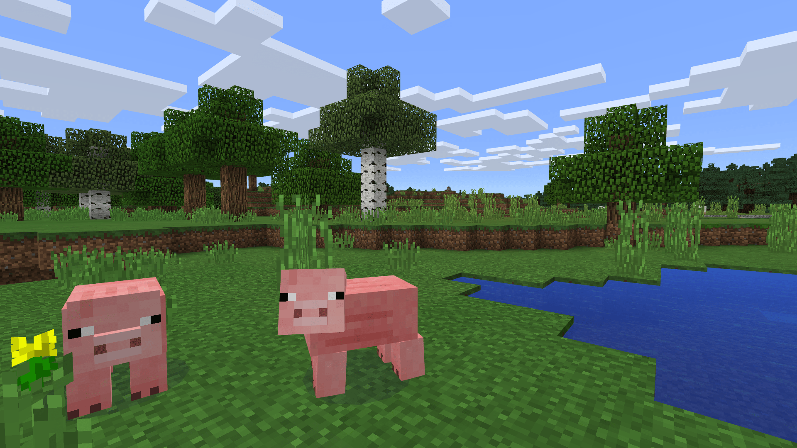
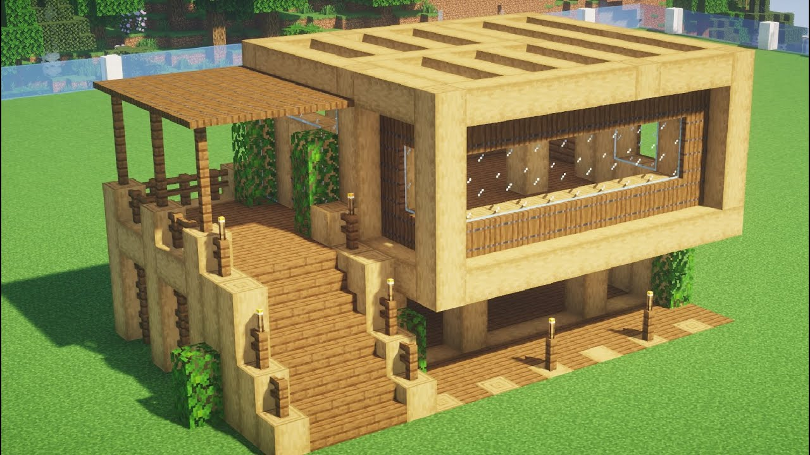
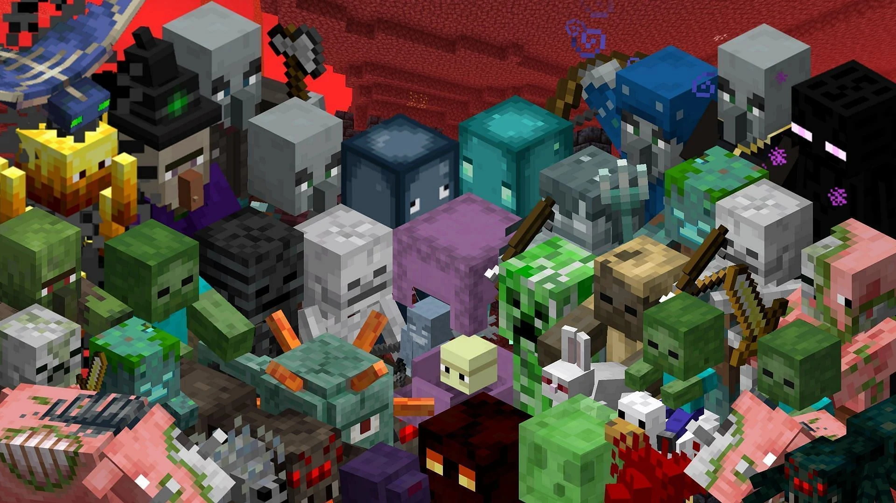

Após instalar o jogo, inicie-o a partir do launcher ou aplicativo correspondente.
Escolha um modo de jogo:
Minecraft oferece diferentes modos de jogo, incluindo o Modo Criativo, Modo Sobrevivência e Modo Aventureiro. Cada modo oferece uma experiência diferente. No Modo Criativo, você tem recursos ilimitados para construir livremente. No Modo Sobrevivência, você precisa coletar recursos, construir abrigos e enfrentar inimigos. No Modo Aventureiro, você explora mapas criados por outros jogadores.
Crie ou selecione um mundo:
No início, você pode criar um novo mundo ou selecionar um mundo existente para jogar. Escolha um nome para o mundo, defina as configurações iniciais e crie-o.
Aprenda os controles:
Familiarize-se com os controles do jogo, que variam dependendo da plataforma em que você está jogando. No PC, os controles padrão incluem WASD para se movimentar, espaço para pular e o botão direito do mouse para interagir com blocos e itens.
Colete recursos:
No Modo Sobrevivência, você precisa coletar recursos, como madeira, pedra, minérios, comida, etc. Use ferramentas, como picaretas e machados, para coletar materiais de forma mais eficiente.

Construa:
Use os recursos que coletou para construir abrigos, ferramentas, armas e muito mais. A construção é uma parte fundamental do jogo, permitindo que você crie estruturas incríveis.

Enfrente inimigos:
Durante a noite e em locais escuros, inimigos, como zumbis e esqueletos, aparecerão. Defenda-se usando armas ou escondendo-se em abrigos seguros.

Explore:
Minecraft é um mundo vasto e cheio de surpresas. Explore cavernas, biomas, vilas e encontre tesouros escondidos.